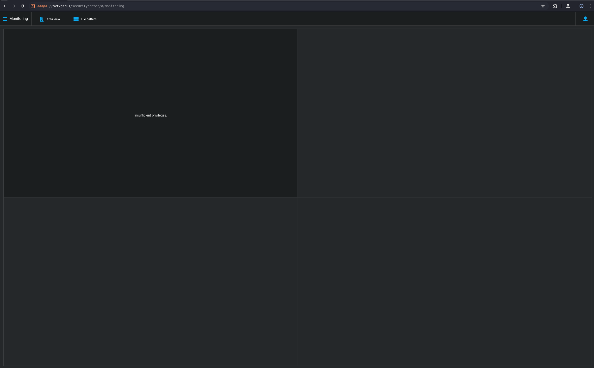
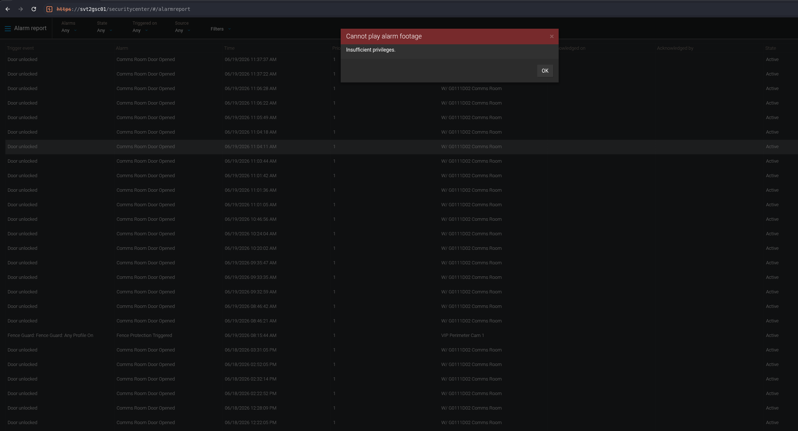
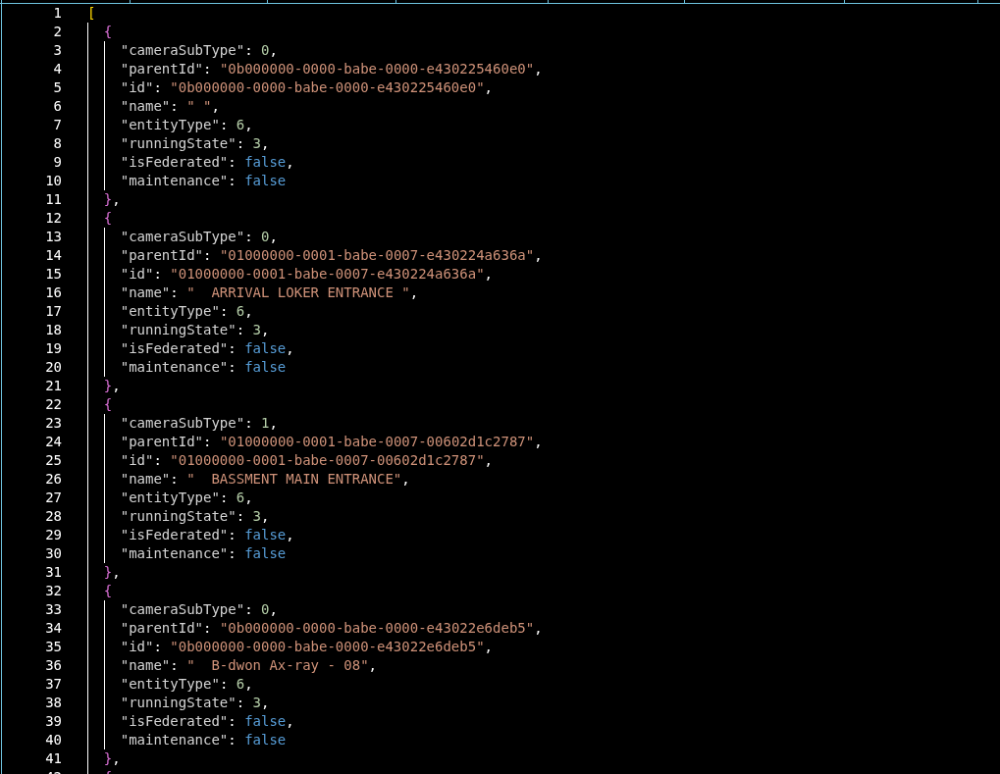
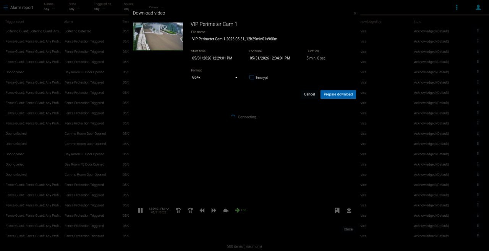
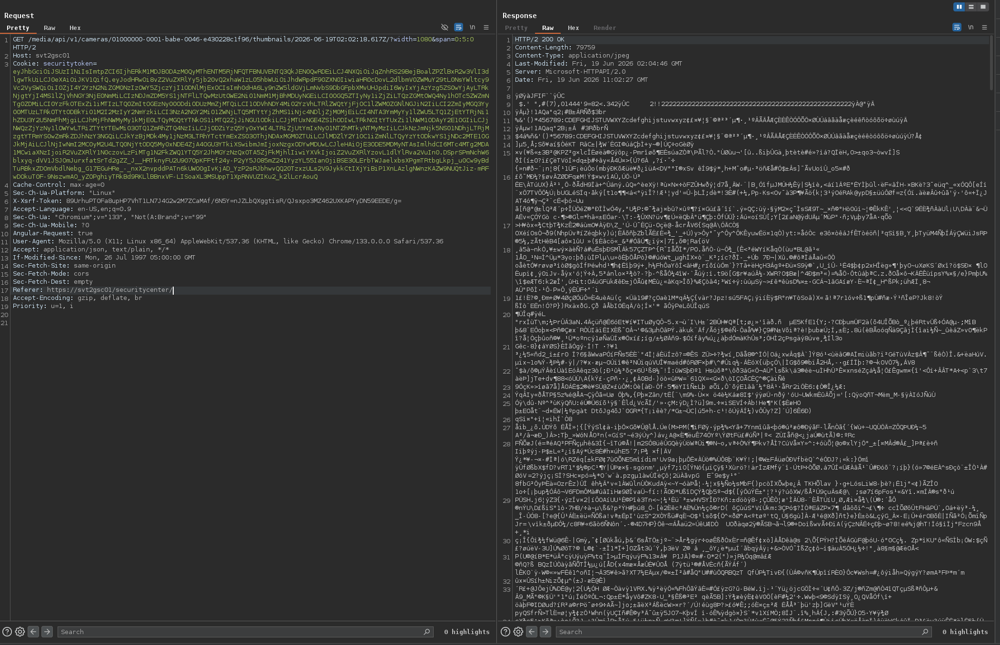
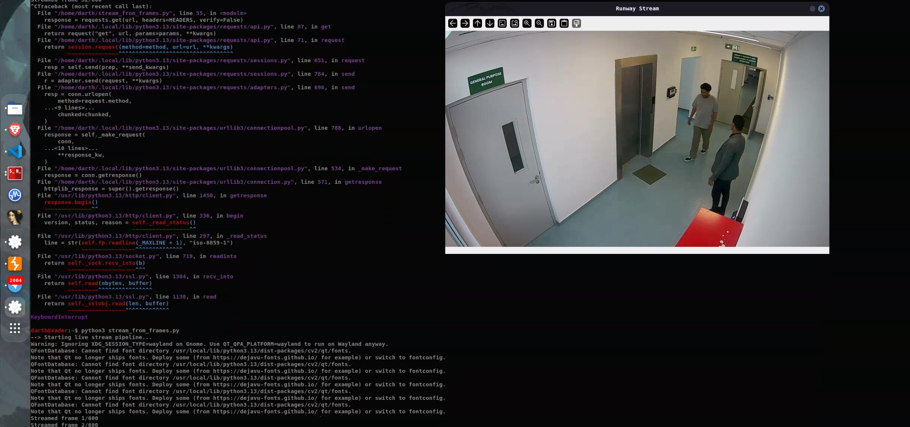
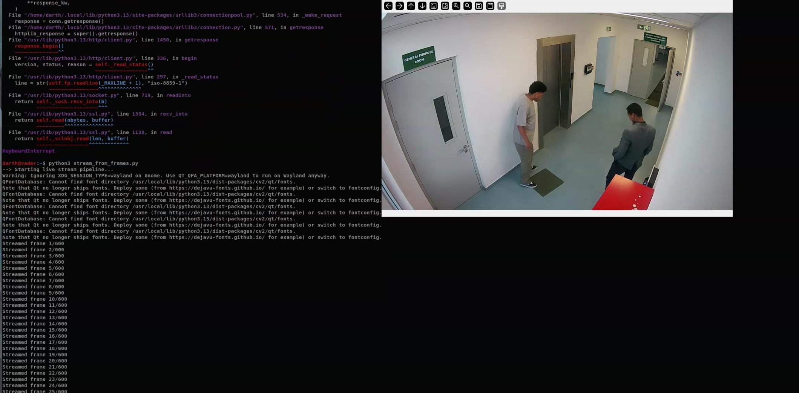
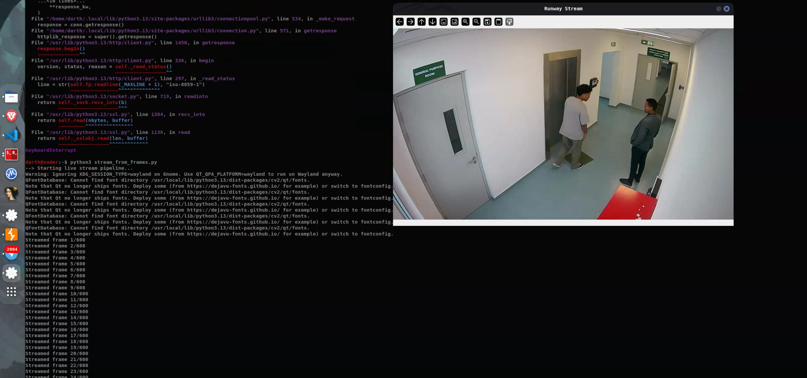

Product: Genetec Security Center - Media Gateway API
Vendor: Genetec Inc.
Class: CWE-862, Missing Authorization
CVSS 3.1: 6.5 (Medium) - AV:N/AC:L/PR:L/UI:N/S:U/C:H/I:N/A:N
Status: Fixed in Security Center 5.14.1.2
Record: CVE-2026-65422
Introduction
In June 2026 me and my colleague found a missing-authorization bug in Genetec Security Center's Media Gateway that let a low-privileged account/read-only account pull a live video playback and download archived videos. Genetec patched it in 5.14.1.2 and the issue was assigned CVE-2026-65422.
Genetec is a global technology company that makes enterprise-level physical security software provides unified physical security and intelligence solutions. It's located in Montréal, Québec, Canada. They offer a wide range of solutions and platforms, one of the most well-known and widely used of which is Security Center.
The Vulnerability
"This might be the funniest exploit you've ever seen."
When a read-only user tries to access Live footage or Alarm footage, it gets denied like "insufficient privileges", every time.
But, What is read-only acoounts? So read only accounts are the lowest privilege level in the system. They can read users that have access on the security cameras, only view the users list. No video playback and archived footage download privileges. Even though each live tile and alarm footage request returns unauthorized, there's a single request that still returns the camera IDs. So we dumped that JSON response containing every camera id and where they were located and it was around 1.2 MB.

Same thing in the Alarm. trying to play back footage attached to an alarm threw the same error:

And this is the camera List JSON response:

The actual exploit happens on the download page. It loads a thumbnail using just the camera ID, a start time, and a width no privilege check at all. Here's how the thumbnail loads:
GET /media/api/v1/cameras/00000001-0000-babe-0000-b8a44f1bbaf2/thumbnails/2026-05-26T06:59:18.617Z/?width=1080
Breaking the request down:
00000001-0000-babe-0000-b8a44f1bbaf2
Camera ID, pulled straight out of the 1.2 MB JSON dump above
2026-05-26T06:59:18.617Z
timestamp (ISO 8601, UTC Format) the exact point in time you want a frame from
?width=1080
thumbnail width in pixels, used to scale the returned image


The Exploit
So the idea to was to automate the thumbnail request for every camera ID we had dumped from the JSON response for a specific time range using the timestamp. We wrote a python script to do that and it worked. We able to see a video playback using each thumbnail and timestamp
First we retrive 600 Frames and set the FPS to 10 with that we were able to see a 60 seconds video from one of the hotel gates. And yeah 600 Frames means 600 requests.
This is an actual video playback that we retrieve a from one of the cameras at the Hotel Gates. So the second thing we tried to get was the Live video while one us standing infront of the camera which was near to us and It didn't work. A "footage" needs 4 hour to be archived. so we had to wait for the footage to be archived before we could access it. and here is some of actual frames captured during the test.



Impact
An account with lower privileges (read only) could use this bug to retrieve a video playback for any alarms, gates, and other restricted areas.
Disclosure
So we reported it to the security team at Genetec. and This is the timeline pretty much:
Reserved: 2026-08-05 Reported: July 13, 2026 Published: 2026-09-24 Fixed in: Security Center 5.14.1.2 Advisory: techdocs.genetec.com - Resolved vulnerabilities in Security Center 5.14.1.2 Record: https://www.cve.org/CVERecord?id=CVE-2026-65422